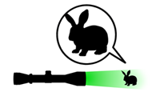
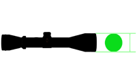
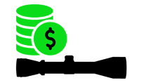
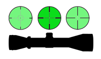
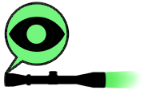
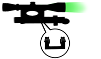

С точки зрения кратности увеличения виды оптических прицелов можно подразделить на три большие группы:
1. Прицелы с постоянным 3-х или 4-х кратным увеличением, предназначенные для стрельбы на дальность до 100 метров и обладающие широким углом обзора, позволяющим сделать необходимое упреждение при выстреле по движущейся цели.
2. Прицелы с изменяемой кратностью, диапазон которой может лежать в пределах 4…12, позволяющие вести стрельбу на расстояния 300 и даже более метров.
3. Прицелы большей кратности и линзами увеличенного диаметра, предназначенные, преимущественно, для спортивной стрельбы.

Еще один важный параметр при ответе на вопрос, какой прицел лучше – диаметр линзы или величина объектива.
Здесь многое зависит от того, на какого зверя предполагается охота, дальности стрельбы и мощности оружия.
В общих случаях рекомендуется не впадать в крайности, а придерживаться правила «золотой середины». При этом следует помнить, что увеличение диаметра повышает светосилу прибора и параллакс (величина, высчитываемая путем деления диаметра оптики на показатель кратности).

Цена оптики во многом зависит от качества материалов, технических характеристик и возможностей. Для работы с мелкими целями с небольших дистанций вполне подойдет недорогой прицел, стоимость которого лежит в районе 3Цена: 000 рублей. А вот для снайперской стрельбы на дальних дистанциях, особенно, если она ведется из мощного оружия, понадобится достаточно дорогая модель.

Важной характеристикой оптического прицела является тип прицельной метки.
Существуют следующие виды прицельных сеток на оптических прицелах:
«Крест» и ее разновидность – прицельная сетка Duplex. В основном применяется для стрельбы по неподвижным целям, находящимся на относительно близком расстоянии. Позволяет наводить оружие достаточно быстро и с высокой точностью.
«Mil-Dot». Усовершенствованный вариант «креста» с дополнительными делениями на тонких прицельных линиях. Такая оптическая сетка позволяет с высокой точностью определить расстояние до цели и внести необходимые поправки.
«Пенек». Т-образная сетка, известная еще со времен второй мировой войны. Обеспечивает быструю наводку, но не дает представления о размерах цели и о расстоянии до нее.
Снайперские прицелы с дополнительными сетками и шкалами, аналогичные прицелу ПСО-1, устанавливаемому на фронтовую армейскую огнестрельную винтовку СВД.
Очень сложно однозначно выделить лучший вид прицельной сетки, поскольку многое зависит от личных предпочтений стрелка и от тех задач, которые стоят перед ним.
Тонкие прицельные сетки иногда могут быть плохо видны в сумерках или на фоне растительности. Чтобы избежать этого в некоторых прицелах предусмотрена подсветка прицельной сетки.
Предпочтительнее прицелы, в которых есть регулировка яркости подсветки, так как при низкой освещенности слишком ярко подсвеченная сетка может даже мешать видеть цель. Некоторые модели прицелов имеют двойную подсветку сетки, чаще всего красную и зеленую, что особенно удобно в глубокие сумерки.

Зачастую оптический прицел снабжается наглазником, выполненным из резины или пластика. Хотя его наличие и не является обязательным, он выполняет не только защитную функцию, оберегая глаз и брови от отдачи при выстреле, но и препятствует засветке окуляра и ослеплению стрелка.

Очень важной деталью, которой должен располагать прицел, является кронштейн для его закрепления на оружии.
Практически любое оружие имеет специальное посадочное гнездо типа «ласточкин хвост» или планка Вивера, на который и устанавливаются крепежные приспособления.
Поскольку существуют различные модели и виды прицелов, то и кронштейны, которые, как правило, не поставляются в комплекте к прибору, могут иметь различную форму:
Моноблок, обеспечивающий надежную и плотную фиксацию.
Раздельная пара, позволяющая добиться наилучших показателей соосности.
Кронштейн с регулировочными винтами.